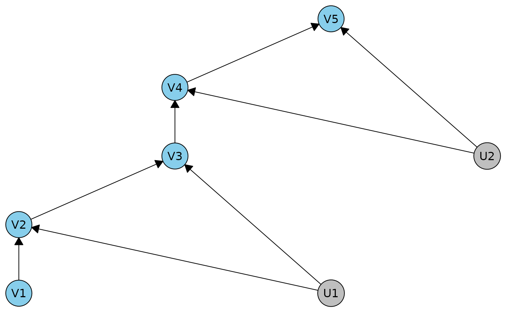
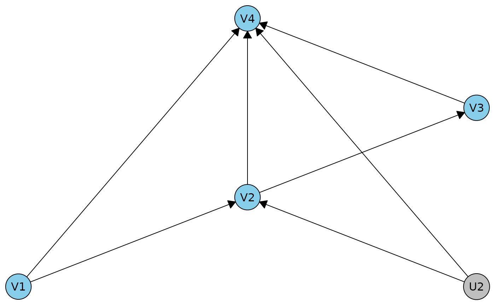
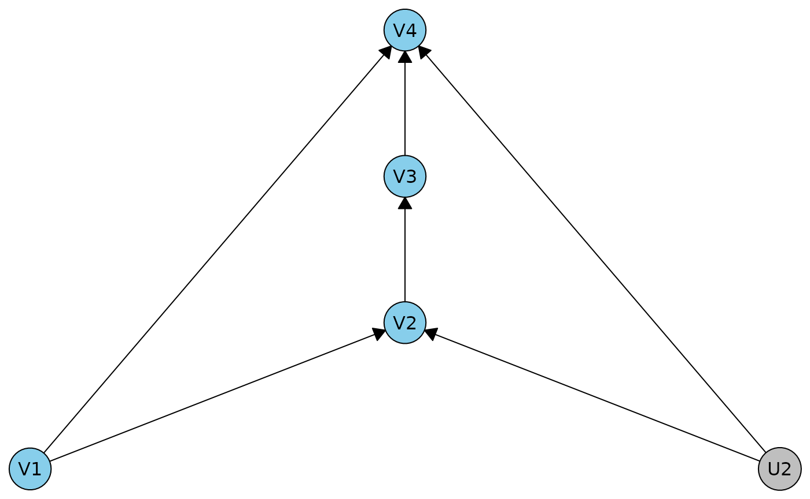
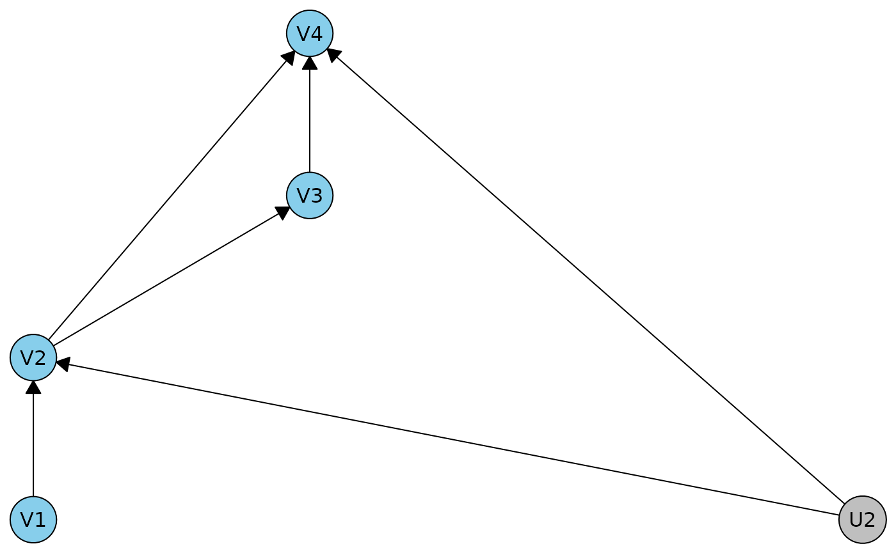
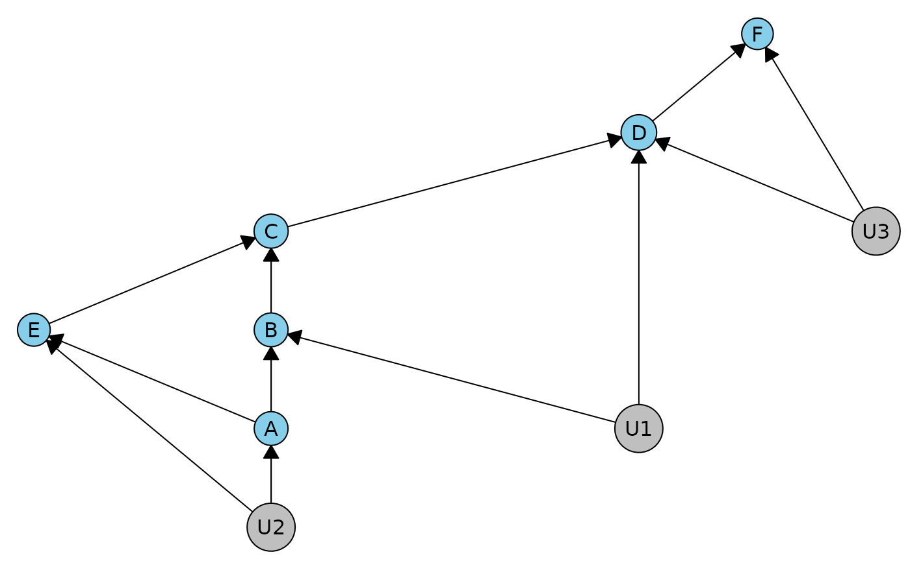
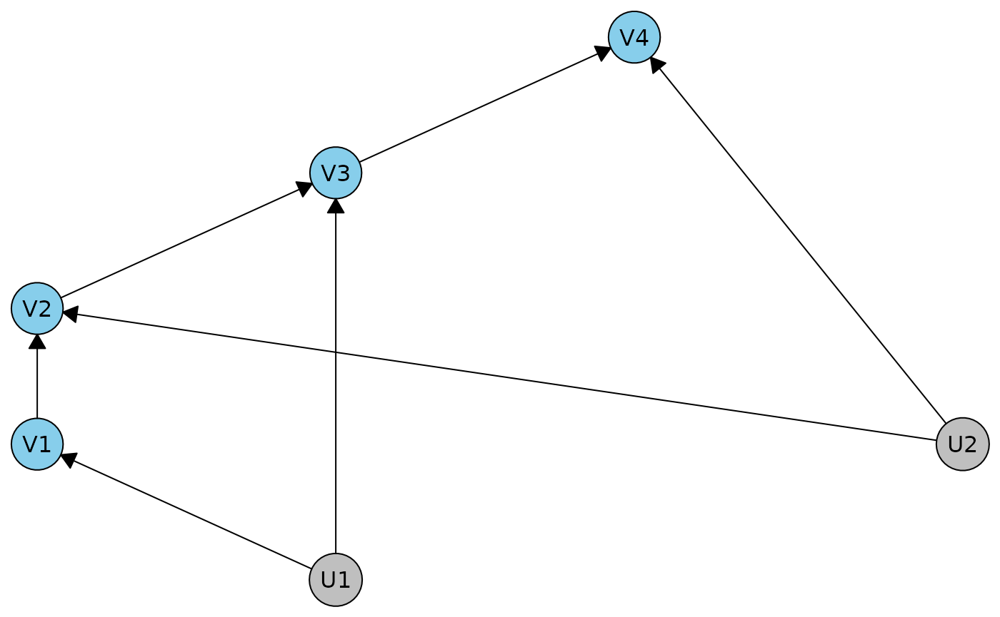

library(meraconstraints)
#> Loading required package: caugi
library(data.table)
#> Warning: package 'data.table' was built under R version 4.5.2Our package meraconstraints depends on
caugi to create the graphical models and do some
operations. caugi is very fast, user friendly, and supports
mixed graphs. Read more about caugi here: https://caugi.org.
IV inequalities
These are the steps to get the complete constraints, illustrated in the IV example:
- Define the DAG using
caugi. Our functiondhvmdoes some basic setup for Discrete Hidden Variables Models (dhvm), and by default assumes that any variable starting with a capital U is latent. The DAG is plotted, with latent variables indicated in grey.

print(ivdag)
#> A Discrete Hidden Variables Model (dhvm)
#> * graph data:
#> <caugi object; 4 nodes, 4 edges; simple: TRUE; built: TRUE; ptr=0x617dbd84f000>
#> graph_class: DAG
#> nodes: Z, X, U, Y
#> edges: Z-->X, X-->Y, U-->X, U-->Y
#> * node data:
#> name latent nvals
#> <char> <lgcl> <int>
#> 1: Z FALSE 2
#> 2: X FALSE 2
#> 3: U TRUE 2
#> 4: Y FALSE 2- Get the constraints
ivmera <- meraconstraints(ivdag)- Print and try to understand them.
ivmera
#> MERA constraints on the dhvm: ivdag
#> The model has districts (unobserved variables marked with [u]:
#> {Z} with c-degree 1, {X, Y, U[u]} with c-degree 1
#> The canonical partitioned model is available in x$dhvm_partitioned
#>
#> Constraints:
#> ------------
#> There are no conditional independence relations.
#> * Equality and inequality constraints by district:
#> There are 4 possibly nontrivial constraints involving X_Y, 4 inequalities and 0 equalities.
#> The first 4 expressions are
#> -P(X = 0|Z = 0)P(Y = 0|X = 0,Z = 0) - P(X = 1|Z = 0)P(Y = 0| ...[truncated]
#> P(X = 1|Z = 0)P(Y = 0|X = 1,Z = 0) - P(X = 0|Z = 1)P(Y = 0|X ...[truncated]
#> P(X = 0|Z = 0)P(Y = 1|X = 0,Z = 0) + P(X = 0|Z = 1)P(Y = 0|X ...[truncated]
#> P(X = 0|Z = 0)P(Y = 0|X = 0,Z = 0) + P(X = 0|Z = 1)P(Y = 1|X ...[truncated]- Convert the H-rep matrix into the text-based constraints. This includes trivial ones. You can print them using either the observable probabilities or the interventional probabilities, which we use the notation P* in the paper.
hrep_to_text(ivmera$polytope$Hrep[[1]], ivmera$functional_relations$probform[[1]])
#> [1] "-P(X = 0|Z = 1)P(Y = 0|X = 0,Z = 1) <= 0"
#> [2] "-P(X = 0|Z = 0)P(Y = 0|X = 0,Z = 0) - P(X = 1|Z = 0)P(Y = 0|X = 1,Z = 0) - P(X = 0|Z = 0)P(Y = 1|X = 0,Z = 0) + P(X = 1|Z = 1)P(Y = 0|X = 1,Z = 1) <= 0"
#> [3] "P(X = 1|Z = 0)P(Y = 0|X = 1,Z = 0) - P(X = 0|Z = 1)P(Y = 0|X = 0,Z = 1) - P(X = 1|Z = 1)P(Y = 0|X = 1,Z = 1) - P(X = 0|Z = 1)P(Y = 1|X = 0,Z = 1) <= 0"
#> [4] "-P(X = 0|Z = 0)P(Y = 0|X = 0,Z = 0) <= 0"
#> [5] "P(X = 0|Z = 0)P(Y = 1|X = 0,Z = 0) + P(X = 0|Z = 1)P(Y = 0|X = 0,Z = 1) <= 1"
#> [6] "P(X = 0|Z = 0)P(Y = 0|X = 0,Z = 0) + P(X = 0|Z = 1)P(Y = 1|X = 0,Z = 1) <= 1"
#> [7] "-P(X = 1|Z = 1)P(Y = 0|X = 1,Z = 1) <= 0"
#> [8] "P(X = 0|Z = 1)P(Y = 0|X = 0,Z = 1) + P(X = 1|Z = 1)P(Y = 0|X = 1,Z = 1) + P(X = 0|Z = 1)P(Y = 1|X = 0,Z = 1) <= 1"
#> [9] "-P(X = 1|Z = 0)P(Y = 0|X = 1,Z = 0) <= 0"
#> [10] "P(X = 0|Z = 0)P(Y = 0|X = 0,Z = 0) + P(X = 1|Z = 0)P(Y = 0|X = 1,Z = 0) + P(X = 0|Z = 0)P(Y = 1|X = 0,Z = 0) <= 1"
#> [11] "-P(X = 0|Z = 0)P(Y = 1|X = 0,Z = 0) <= 0"
#> [12] "-P(X = 0|Z = 1)P(Y = 1|X = 0,Z = 1) <= 0"
#> [13] "-P(X = 0|Z = 0)P(Y = 0|X = 0,Z = 0) - P(X = 1|Z = 0)P(Y = 0|X = 1,Z = 0) - P(X = 0|Z = 0)P(Y = 1|X = 0,Z = 0) - P(X = 1|Z = 0)P(Y = 1|X = 1,Z = 0) = -1"
#> [14] "-P(X = 0|Z = 1)P(Y = 0|X = 0,Z = 1) - P(X = 1|Z = 1)P(Y = 0|X = 1,Z = 1) - P(X = 0|Z = 1)P(Y = 1|X = 0,Z = 1) - P(X = 1|Z = 1)P(Y = 1|X = 1,Z = 1) = -1"
hrep_to_text(ivmera$polytope$Hrep[[1]], ivmera$functional_relations$probstarform[[1]])
#> [1] "-P*(X = 0,Y = 0|Z = 1) <= 0"
#> [2] "-P*(X = 0,Y = 0|Z = 0) - P*(X = 1,Y = 0|Z = 0) - P*(X = 0,Y = 1|Z = 0) + P*(X = 1,Y = 0|Z = 1) <= 0"
#> [3] "P*(X = 1,Y = 0|Z = 0) - P*(X = 0,Y = 0|Z = 1) - P*(X = 1,Y = 0|Z = 1) - P*(X = 0,Y = 1|Z = 1) <= 0"
#> [4] "-P*(X = 0,Y = 0|Z = 0) <= 0"
#> [5] "P*(X = 0,Y = 1|Z = 0) + P*(X = 0,Y = 0|Z = 1) <= 1"
#> [6] "P*(X = 0,Y = 0|Z = 0) + P*(X = 0,Y = 1|Z = 1) <= 1"
#> [7] "-P*(X = 1,Y = 0|Z = 1) <= 0"
#> [8] "P*(X = 0,Y = 0|Z = 1) + P*(X = 1,Y = 0|Z = 1) + P*(X = 0,Y = 1|Z = 1) <= 1"
#> [9] "-P*(X = 1,Y = 0|Z = 0) <= 0"
#> [10] "P*(X = 0,Y = 0|Z = 0) + P*(X = 1,Y = 0|Z = 0) + P*(X = 0,Y = 1|Z = 0) <= 1"
#> [11] "-P*(X = 0,Y = 1|Z = 0) <= 0"
#> [12] "-P*(X = 0,Y = 1|Z = 1) <= 0"
#> [13] "-P*(X = 0,Y = 0|Z = 0) - P*(X = 1,Y = 0|Z = 0) - P*(X = 0,Y = 1|Z = 0) - P*(X = 1,Y = 1|Z = 0) = -1"
#> [14] "-P*(X = 0,Y = 0|Z = 1) - P*(X = 1,Y = 0|Z = 1) - P*(X = 0,Y = 1|Z = 1) - P*(X = 1,Y = 1|Z = 1) = -1"- Identify and exclude the definitely trivial constraints.
hrep_to_text(ivmera$polytope$Hrep[[1]], ivmera$functional_relations$probform[[1]])[ivmera$trivial_if_false[[1]]]
#> [1] "-P(X = 0|Z = 0)P(Y = 0|X = 0,Z = 0) - P(X = 1|Z = 0)P(Y = 0|X = 1,Z = 0) - P(X = 0|Z = 0)P(Y = 1|X = 0,Z = 0) + P(X = 1|Z = 1)P(Y = 0|X = 1,Z = 1) <= 0"
#> [2] "P(X = 1|Z = 0)P(Y = 0|X = 1,Z = 0) - P(X = 0|Z = 1)P(Y = 0|X = 0,Z = 1) - P(X = 1|Z = 1)P(Y = 0|X = 1,Z = 1) - P(X = 0|Z = 1)P(Y = 1|X = 0,Z = 1) <= 0"
#> [3] "P(X = 0|Z = 0)P(Y = 1|X = 0,Z = 0) + P(X = 0|Z = 1)P(Y = 0|X = 0,Z = 1) <= 1"
#> [4] "P(X = 0|Z = 0)P(Y = 0|X = 0,Z = 0) + P(X = 0|Z = 1)P(Y = 1|X = 0,Z = 1) <= 1"Those are the familiar IV inequalities.
- For a given distribution, test whether the constraints are satisfied, optionally show which one(s).
obsprobs <- c(0.101, 0.338, 0.013, 0.548, 0.317, 0.51, 0.004, 0.168)
hrep_test(ivmera$polytope$Hrep[[1]], obsprobs)
#> [1] FALSE
hrep_test(ivmera$polytope$Hrep[[1]], obsprobs, which = TRUE)
#> [,1]
#> [1,] TRUE
#> [2,] FALSE
#> [3,] TRUE
#> [4,] TRUE
#> [5,] TRUE
#> [6,] TRUE
#> [7,] TRUE
#> [8,] TRUE
#> [9,] TRUE
#> [10,] TRUE
#> [11,] TRUE
#> [12,] TRUE
#> [13,] TRUE
#> [14,] FALSEAs you can see below, when we sample distributions unconstrained from the uniform distribution, only those 4 nontrival ones are ever violated, about 5% of the time.
ptable <- data.table(expand.grid(X = 0:1, Y = 0:1, Z = 0:1))
sprob <- function(k) {
diff(sort(c(runif(k - 1), 0, 1)))
}
res <- matrix(NA, nrow = 200, ncol = 14)
for(i in 1:nrow(res)) {
ptable$joint <- sprob(8)
ptable[, pXZ := sum(joint), by = .(X, Z)]
ptable[, pXY := sum(joint), by = .(X, Y)]
ptable[, pZ := sum(joint), by = .(Z)]
ptable[, pX := sum(joint), by = .(X)]
ptable[, pv := (pXZ / pZ) * (joint / pXZ)]
res[i, ] <- hrep_test(ivmera$polytope$Hrep[[1]], ptable$pv, which = TRUE)[, 1]
}
colMeans(res)
#> [1] 1.000 0.925 0.955 1.000 0.965 0.950 1.000 1.000 1.000 1.000 1.000 1.000
#> [13] 1.000 1.000Sequential IV example
ivdag2 <- caugi(V1 %-->% V2 %-->% V3 %-->% V4 %-->% V5, U1 %-->% V2 +V3, U2 %-->% V4 +V5) |> dhvm()
plot(ivdag2)
In this example we get some regular independences, and 2 sets of the 4 IV inequalities.
ivmera2 <- meraconstraints(ivdag2)
ivmera2
#> MERA constraints on the dhvm: ivdag2
#> The model has districts (unobserved variables marked with [u]:
#> {V1} with c-degree 1, {V2, V3, U1[u]} with c-degree 1, {V4, V5, U2[u]} with c-degree 1
#> The canonical partitioned model is available in x$dhvm_partitioned
#>
#> Constraints:
#> ------------
#> * Conditional independence relations:
#> V1 ⟂ V4 | V3, V1 ⟂ V5 | V3, V2 ⟂ V4 | V3, V2 ⟂ V5 | V3
#> * Equality and inequality constraints by district:
#> There are 4 possibly nontrivial constraints involving V2_V3, 4 inequalities and 0 equalities.
#> The first 4 expressions are
#> -P(V2 = 0|V1 = 0)P(V3 = 0|V2 = 0,V1 = 0) - P(V2 = 1|V1 = 0)P ...[truncated]
#> P(V2 = 1|V1 = 0)P(V3 = 0|V2 = 1,V1 = 0) - P(V2 = 0|V1 = 1)P( ...[truncated]
#> P(V2 = 0|V1 = 0)P(V3 = 1|V2 = 0,V1 = 0) + P(V2 = 0|V1 = 1)P( ...[truncated]
#> P(V2 = 0|V1 = 0)P(V3 = 0|V2 = 0,V1 = 0) + P(V2 = 0|V1 = 1)P( ...[truncated]
#> There are 4 possibly nontrivial constraints involving V4_V5, 4 inequalities and 0 equalities.
#> The first 4 expressions are
#> -P(V4 = 0|V3 = 0)P(V5 = 0|V4 = 0,V3 = 0) - P(V4 = 1|V3 = 0)P ...[truncated]
#> P(V4 = 1|V3 = 0)P(V5 = 0|V4 = 1,V3 = 0) - P(V4 = 0|V3 = 1)P( ...[truncated]
#> P(V4 = 0|V3 = 0)P(V5 = 1|V4 = 0,V3 = 0) + P(V4 = 0|V3 = 1)P( ...[truncated]
#> P(V4 = 0|V3 = 0)P(V5 = 0|V4 = 0,V3 = 0) + P(V4 = 0|V3 = 1)P( ...[truncated]Robin’s nested examples
Here are 3 DAGs that have the same equality constraints.
r0dag <- caugi(V1 %-->% V2 %-->% V3 %-->% V4, V1 %-->% V4, V2 %-->% V4, U2 %-->% V2+V4) |> dhvm()
r1dag <- caugi(V1 %-->% V2 %-->% V3 %-->% V4, V1 %-->% V4, U2 %-->% V2+V4) |> dhvm()
r2dag <- caugi(V1 %-->% V2 %-->% V3 %-->% V4, V2 %-->% V4, U2 %-->% V2+V4) |> dhvm()
plot(r0dag)
plot(r1dag)
plot(r2dag)
r0cn <- meraconstraints(r0dag)
r1cn <- meraconstraints(r1dag)
r2cn <- meraconstraints(r2dag)
r0cn
#> MERA constraints on the dhvm: r0dag
#> The model has districts (unobserved variables marked with [u]:
#> {V1} with c-degree 1, {V2, V4, U2[u]} with c-degree 1, {V3} with c-degree 1
#> The canonical partitioned model is available in x$dhvm_partitioned
#>
#> Constraints:
#> ------------
#> * Conditional independence relations:
#> V1 ⟂ V3 | V2
#> * Equality and inequality constraints by district:
#> There are 8 possibly nontrivial constraints involving V2_V4, 4 inequalities and 4 equalities.
#> The first 4 expressions are
#> -P(V2 = 0|V1 = 1)P(V4 = 0|V2 = 0,V1 = 1,V3 = 0) - P(V2 = 0|V ...[truncated]
#> -P(V2 = 0|V1 = 0)P(V4 = 0|V2 = 0,V1 = 0,V3 = 0) - P(V2 = 0|V ...[truncated]
#> P(V2 = 0|V1 = 1)P(V4 = 0|V2 = 0,V1 = 1,V3 = 0) + P(V2 = 0|V1 ...[truncated]
#> P(V2 = 0|V1 = 0)P(V4 = 0|V2 = 0,V1 = 0,V3 = 0) + P(V2 = 0|V1 ...[truncated]
#> There are 0 possibly nontrivial constraints involving V3, 0 inequalities and 0 equalities.
r1cn
#> MERA constraints on the dhvm: r1dag
#> The model has districts (unobserved variables marked with [u]:
#> {V1} with c-degree 1, {V2, V4, U2[u]} with c-degree 1, {V3} with c-degree 1
#> The canonical partitioned model is available in x$dhvm_partitioned
#>
#> Constraints:
#> ------------
#> * Conditional independence relations:
#> V1 ⟂ V3 | V2
#> * Equality and inequality constraints by district:
#> There are 8 possibly nontrivial constraints involving V2_V4, 4 inequalities and 4 equalities.
#> The first 4 expressions are
#> -P(V2 = 0|V1 = 1)P(V4 = 0|V2 = 0,V1 = 1,V3 = 0) - P(V2 = 0|V ...[truncated]
#> -P(V2 = 0|V1 = 0)P(V4 = 0|V2 = 0,V1 = 0,V3 = 0) - P(V2 = 0|V ...[truncated]
#> P(V2 = 0|V1 = 1)P(V4 = 0|V2 = 0,V1 = 1,V3 = 0) + P(V2 = 0|V1 ...[truncated]
#> P(V2 = 0|V1 = 0)P(V4 = 0|V2 = 0,V1 = 0,V3 = 0) + P(V2 = 0|V1 ...[truncated]
#> There are 0 possibly nontrivial constraints involving V3, 0 inequalities and 0 equalities.
r2cn
#> MERA constraints on the dhvm: r2dag
#> The model has districts (unobserved variables marked with [u]:
#> {V1} with c-degree 1, {V2, V4, U2[u]} with c-degree 1, {V3} with c-degree 1
#> The canonical partitioned model is available in x$dhvm_partitioned
#>
#> Constraints:
#> ------------
#> * Conditional independence relations:
#> V1 ⟂ V3 | V2
#> * Equality and inequality constraints by district:
#> There are 16 possibly nontrivial constraints involving V2_V4, 12 inequalities and 4 equalities.
#> The first 4 expressions are
#> -P(V2 = 0|V1 = 0)P(V4 = 0|V2 = 0,V1 = 0,V3 = 0) - P(V2 = 1|V ...[truncated]
#> -P(V2 = 0|V1 = 0)P(V4 = 0|V2 = 0,V1 = 0,V3 = 0) - P(V2 = 0|V ...[truncated]
#> P(V2 = 1|V1 = 0)P(V4 = 0|V2 = 1,V1 = 0,V3 = 0) - P(V2 = 0|V1 ...[truncated]
#> -P(V2 = 0|V1 = 1)P(V4 = 0|V2 = 0,V1 = 1,V3 = 0) - P(V2 = 0|V ...[truncated]
#> There are 0 possibly nontrivial constraints involving V3, 0 inequalities and 0 equalities.The constraints on the V3 district are trivial in all 3 DAGs but the
ones on the district with V2, V4 are different in
r2dag.
Let’s see if we can distinguish these models. Here I am sampling a
distribution from the r1dag, and seeing if the constraints
derived from r2dag are ever violated.
res <- matrix(NA, nrow = 500, ncol = nrow(r2cn$polytope$Hrep[["V2_V4"]]))
for(i in 1:nrow(res)) {
probs <- data.table(dhvm_sample_distribution(r1dag, parmsamp = \(k) rnorm(k, sd = 5)))
## get probabilities of the form P(V2 = 0|V1 = 0)P(V4 = 0|V2 = 0,V1 = 0,V3 = 0)
probs[, prob.V1V2V3 := prob.V3_V2 * prob.V2_V1 * prob.V1]
probs[, prob.V4_rest := prob.joint / prob.V1V2V3]
probs[, prob.test := prob.V4_rest * prob.V2_V1]
## correct order
probs <- merge(r2cn$functional_relations$problevels[[1]], probs, sort = FALSE)
res[i,] <- hrep_test(r2cn$polytope$Hrep[["V2_V4"]], probs$prob.test, which = TRUE)
}
hrep_to_text(r2cn$polytope$Hrep[["V2_V4"]],
r2cn$functional_relations$probform[[1]])[colMeans(res) < 1]
#> [1] "-P(V2 = 0|V1 = 0)P(V4 = 0|V2 = 0,V1 = 0,V3 = 0) - P(V2 = 1|V1 = 0)P(V4 = 0|V2 = 1,V1 = 0,V3 = 0) - P(V2 = 0|V1 = 0)P(V4 = 1|V2 = 0,V1 = 0,V3 = 0) + P(V2 = 1|V1 = 1)P(V4 = 0|V2 = 1,V1 = 1,V3 = 0) <= 0"
#> [2] "-P(V2 = 0|V1 = 0)P(V4 = 0|V2 = 0,V1 = 0,V3 = 0) - P(V2 = 0|V1 = 0)P(V4 = 1|V2 = 0,V1 = 0,V3 = 0) - P(V2 = 1|V1 = 0)P(V4 = 0|V2 = 1,V1 = 0,V3 = 1) + P(V2 = 1|V1 = 1)P(V4 = 0|V2 = 1,V1 = 1,V3 = 1) <= 0"
#> [3] "P(V2 = 1|V1 = 0)P(V4 = 0|V2 = 1,V1 = 0,V3 = 0) - P(V2 = 0|V1 = 1)P(V4 = 0|V2 = 0,V1 = 1,V3 = 0) - P(V2 = 1|V1 = 1)P(V4 = 0|V2 = 1,V1 = 1,V3 = 0) - P(V2 = 0|V1 = 1)P(V4 = 1|V2 = 0,V1 = 1,V3 = 0) <= 0"
#> [4] "-P(V2 = 0|V1 = 1)P(V4 = 0|V2 = 0,V1 = 1,V3 = 0) - P(V2 = 0|V1 = 1)P(V4 = 1|V2 = 0,V1 = 1,V3 = 0) + P(V2 = 1|V1 = 0)P(V4 = 0|V2 = 1,V1 = 0,V3 = 1) - P(V2 = 1|V1 = 1)P(V4 = 0|V2 = 1,V1 = 1,V3 = 1) <= 0"
#> [5] "P(V2 = 0|V1 = 0)P(V4 = 1|V2 = 0,V1 = 0,V3 = 0) + P(V2 = 0|V1 = 1)P(V4 = 0|V2 = 0,V1 = 1,V3 = 0) <= 1"
#> [6] "P(V2 = 0|V1 = 0)P(V4 = 0|V2 = 0,V1 = 0,V3 = 0) + P(V2 = 0|V1 = 1)P(V4 = 1|V2 = 0,V1 = 1,V3 = 0) <= 1"
#> [7] "P(V2 = 0|V1 = 0)P(V4 = 0|V2 = 0,V1 = 0,V3 = 0) + P(V2 = 0|V1 = 0)P(V4 = 1|V2 = 0,V1 = 0,V3 = 0) - P(V2 = 0|V1 = 0)P(V4 = 0|V2 = 0,V1 = 0,V3 = 1) + P(V2 = 0|V1 = 1)P(V4 = 0|V2 = 0,V1 = 1,V3 = 1) <= 1"
#> [8] "P(V2 = 0|V1 = 1)P(V4 = 0|V2 = 0,V1 = 1,V3 = 0) + P(V2 = 0|V1 = 1)P(V4 = 1|V2 = 0,V1 = 1,V3 = 0) + P(V2 = 0|V1 = 0)P(V4 = 0|V2 = 0,V1 = 0,V3 = 1) - P(V2 = 0|V1 = 1)P(V4 = 0|V2 = 0,V1 = 1,V3 = 1) <= 1"These are 8 nontrivial inequality constraints that can tell us that a distribution sampled from model 1 does not come from model 2. The other direction does not work, if we sample from model 2, we cannot distinguish it from model 1.
Incomplete linear example
duargr <- dhvm(caugi(A %-->% B+E, B %-->% C, C %-->% D, D %-->% F, E %-->% C,
U1 %-->% B+D, U2 %-->% A+C+E, U3 %-->% D+F))
plot(duargr)
In this DAG, we cannot apply our method directly because it has c-degree 2. Specifically, the district containing the variables B, D, F has two unobserved variables in it. If we try to get the constraints, we get an error:
meraconstraints(duargr)
#> Error in dhvm_canonical_partition(dhvm): c-degree is greater than 1, cannot do the canonical partitioning. Check district(s): {B, D, F, U1[u], U3[u]}To apply our method, we can merge these latents into a single one. The resulting constraints hold in the original DAG, but they are not necessarily complete.
duarg2 <- dhvm_merge_latents(duargr)
plot(duarg2)
meraconstraints(duarg2)
#> MERA constraints on the dhvm: duarg2
#> The model has districts (unobserved variables marked with [u]:
#> {A, C, E, U2[u]} with c-degree 1, {B, D, F, U1[u]} with c-degree 1
#> The canonical partitioned model is available in x$dhvm_partitioned
#>
#> Constraints:
#> ------------
#> * Conditional independence relations:
#> B ⟂ E | A, c("D ⟂ E | A", "D ⟂ E | B", "D ⟂ E | C"), c("E ⟂ F | A", "E ⟂ F | B", "E ⟂ F | C")
#> * Equality and inequality constraints by district:
#> There are 8 possibly nontrivial constraints involving A_C_E, 4 inequalities and 4 equalities.
#> The first 4 expressions are
#> -P(A = 0)P(C = 0|A = 0,E = 0,B = 0)P(E = 0|A = 0) - P(A = 0) ...[truncated]
#> -P(A = 1)P(C = 0|A = 1,E = 0,B = 0)P(E = 0|A = 1) - P(A = 1) ...[truncated]
#> -P(A = 0)P(C = 0|A = 0,E = 1,B = 0)P(E = 1|A = 0) - P(A = 0) ...[truncated]
#> P(A = 0)P(C = 0|A = 0,E = 0,B = 0)P(E = 0|A = 0) + P(A = 1)P ...[truncated]
#> There are 1118 possibly nontrivial constraints involving B_D_F, 1107 inequalities and 11 equalities.
#> The first 4 expressions are
#> P(B = 0|A = 0)P(D = 0|B = 0,A = 0,C = 0)P(F = 0|B = 0,D = 0, ...[truncated]
#> P(B = 0|A = 0)P(D = 0|B = 0,A = 0,C = 0)P(F = 0|B = 0,D = 0, ...[truncated]
#> -P(B = 0|A = 0)P(D = 1|B = 0,A = 0,C = 0)P(F = 0|B = 0,D = 1 ...[truncated]
#> -P(B = 0|A = 0)P(D = 1|B = 0,A = 0,C = 0)P(F = 0|B = 0,D = 1 ...[truncated]Front door model
The classic front door model has no observable constraints.

fdcn <- meraconstraints(fd)
fdcn
#> MERA constraints on the dhvm: fd
#> The model has districts (unobserved variables marked with [u]:
#> {A, Y, U1[u]} with c-degree 1, {M} with c-degree 1
#> The canonical partitioned model is available in x$dhvm_partitioned
#>
#> Constraints:
#> ------------
#> There are no conditional independence relations.
#> * Equality and inequality constraints by district:
#> There are 4 possibly nontrivial constraints involving A_Y, 2 inequalities and 2 equalities.
#> The first 4 expressions are
#> -P(A = 0)P(Y = 0|A = 0,M = 0) - P(A = 0)P(Y = 1|A = 0,M = 0) ...[truncated]
#> P(A = 0)P(Y = 0|A = 0,M = 0) + P(A = 0)P(Y = 1|A = 0,M = 0) ...[truncated]
#> P(A = 0)P(Y = 0|A = 0,M = 0) + P(A = 0)P(Y = 1|A = 0,M = 0) ...[truncated]
#> -P(A = 0)P(Y = 0|A = 0,M = 0) - P(A = 0)P(Y = 1|A = 0,M = 0) ...[truncated]
#> There are 0 possibly nontrivial constraints involving M, 0 inequalities and 0 equalities.Even though we report 4 possibly nontrivial constraints, they are all obviously trivial.
hrep_to_text(fdcn$polytope$Hrep[[1]], prob = fdcn$functional_relations$probform[[1]])
#> [1] "-P(A = 0)P(Y = 0|A = 0,M = 1) <= 0"
#> [2] "-P(A = 0)P(Y = 0|A = 0,M = 0) <= 0"
#> [3] "-P(A = 0)P(Y = 0|A = 0,M = 0) - P(A = 0)P(Y = 1|A = 0,M = 0) + P(A = 0)P(Y = 0|A = 0,M = 1) <= 0"
#> [4] "-P(A = 0)P(Y = 1|A = 0,M = 0) <= 0"
#> [5] "-P(A = 1)P(Y = 0|A = 1,M = 1) <= 0"
#> [6] "-P(A = 1)P(Y = 0|A = 1,M = 0) <= 0"
#> [7] "P(A = 0)P(Y = 0|A = 0,M = 0) + P(A = 0)P(Y = 1|A = 0,M = 0) + P(A = 1)P(Y = 0|A = 1,M = 1) <= 1"
#> [8] "P(A = 0)P(Y = 0|A = 0,M = 0) + P(A = 1)P(Y = 0|A = 1,M = 0) + P(A = 0)P(Y = 1|A = 0,M = 0) <= 1"
#> [9] "-P(A = 0)P(Y = 0|A = 0,M = 0) - P(A = 1)P(Y = 0|A = 1,M = 0) - P(A = 0)P(Y = 1|A = 0,M = 0) - P(A = 1)P(Y = 1|A = 1,M = 0) = -1"
#> [10] "P(A = 0)P(Y = 0|A = 0,M = 0) + P(A = 0)P(Y = 1|A = 0,M = 0) - P(A = 0)P(Y = 0|A = 0,M = 1) - P(A = 0)P(Y = 1|A = 0,M = 1) = 0"
#> [11] "-P(A = 0)P(Y = 0|A = 0,M = 0) - P(A = 0)P(Y = 1|A = 0,M = 0) - P(A = 1)P(Y = 0|A = 1,M = 1) - P(A = 1)P(Y = 1|A = 1,M = 1) = -1"In the first district, we flag some of them as not definitely trivial. Why is that? Well, they can be violated if we observed a distribution where we intervened on M. This can be seen when we look at the constraints in terms of the P* probabilities.
## all trivial unless you can intervene on M
hrep_to_text(fdcn$polytope$Hrep[[1]],
prob = fdcn$functional_relations$probstarform[[1]])[
fdcn$trivial_if_false[[1]]
]
#> [1] "-P*(A = 0,Y = 0|M = 0) - P*(A = 0,Y = 1|M = 0) + P*(A = 0,Y = 0|M = 1) <= 0"
#> [2] "P*(A = 0,Y = 0|M = 0) + P*(A = 0,Y = 1|M = 0) + P*(A = 1,Y = 0|M = 1) <= 1"
#> [3] "P*(A = 0,Y = 0|M = 0) + P*(A = 0,Y = 1|M = 0) - P*(A = 0,Y = 0|M = 1) - P*(A = 0,Y = 1|M = 1) = 0"
#> [4] "-P*(A = 0,Y = 0|M = 0) - P*(A = 0,Y = 1|M = 0) - P*(A = 1,Y = 0|M = 1) - P*(A = 1,Y = 1|M = 1) = -1"More difficult example
d1 <- dhvm(caugi(V1 %-->% V2, V2 %-->% V3, V3 %-->% V4, U1 %-->% V1+ V3, U2 %-->% V2 + V4))
plot(d1)
This has no conditional independences:
dhvm_list_independences(d1)
#> list()It does however have possibly nontrivial constraints that we can find.
d1cn <- meraconstraints(d1)
d1cn
#> MERA constraints on the dhvm: d1
#> The model has districts (unobserved variables marked with [u]:
#> {V1, V3, U1[u]} with c-degree 1, {V2, V4, U2[u]} with c-degree 1
#> The canonical partitioned model is available in x$dhvm_partitioned
#>
#> Constraints:
#> ------------
#> There are no conditional independence relations.
#> * Equality and inequality constraints by district:
#> There are 4 possibly nontrivial constraints involving V1_V3, 2 inequalities and 2 equalities.
#> The first 4 expressions are
#> -P(V1 = 0)P(V3 = 0|V1 = 0,V2 = 0) - P(V1 = 0)P(V3 = 1|V1 = 0 ...[truncated]
#> P(V1 = 0)P(V3 = 0|V1 = 0,V2 = 0) + P(V1 = 0)P(V3 = 1|V1 = 0, ...[truncated]
#> P(V1 = 0)P(V3 = 0|V1 = 0,V2 = 0) + P(V1 = 0)P(V3 = 1|V1 = 0, ...[truncated]
#> -P(V1 = 0)P(V3 = 0|V1 = 0,V2 = 0) - P(V1 = 0)P(V3 = 1|V1 = 0 ...[truncated]
#> There are 22 possibly nontrivial constraints involving V2_V4, 15 inequalities and 7 equalities.
#> The first 4 expressions are
#> P(V2 = 0|V1 = 0)P(V4 = 0|V2 = 0,V1 = 0,V3 = 0) + P(V2 = 0|V1 ...[truncated]
#> P(V2 = 0|V1 = 0)P(V4 = 1|V2 = 0,V1 = 0,V3 = 0) + P(V2 = 0|V1 ...[truncated]
#> P(V2 = 0|V1 = 0)P(V4 = 0|V2 = 0,V1 = 0,V3 = 0) + P(V2 = 1|V1 ...[truncated]
#> P(V2 = 1|V1 = 0)P(V4 = 0|V2 = 1,V1 = 0,V3 = 0) + P(V2 = 0|V1 ...[truncated]Let’s sample some probability distributions without any restrictions as see if anything is violated.
res <- matrix(NA, nrow = 500, ncol = sum(sapply(d1cn$polytope$Hrep, nrow)))
baseprob <- expand.grid(V1 = 0:1, V2 = 0:1, V3 = 0:1, V4 = 0:1)
for(i in 1:nrow(res)) {
probs <- data.table(baseprob, prob.joint = diff(sort(c(0, 1, runif(nrow(baseprob) - 1)))))
probs[, prob.V1V2V3 := sum(prob.joint), by = .(V1, V2, V3)]
probs[, prob.V1V2 := sum(prob.joint), by = .(V1, V2)]
probs[, prob.V1 := sum(prob.joint), by = .(V1)]
probs[, prob.test1 := prob.V1 * prob.V1V2V3 / prob.V1V2]
probs[, prob.test2 := prob.V1V2 / prob.V1 * prob.joint / prob.V1V2V3]
res[i,] <- c(hrep_test(d1cn$polytope$Hrep[[1]],
merge(d1cn$functional_relations$problevels[[1]],
unique(probs[, .(V1, V3, V2, prob.test1)]), sort = FALSE)$prob.test1, which = TRUE),
hrep_test(d1cn$polytope$Hrep[[2]], merge(d1cn$functional_relations$problevels[[2]],
unique(probs[, .(V1, V3, V2, V4, prob.test2)]), sort = FALSE)$prob.test2, which = TRUE))
}
sapply(d1cn$polytope$Hrep, nrow)
#> V1_V3 V2_V4
#> 11 32
which(colMeans(res) < 1)
#> [1] 14 15 17 18 20 21 22 23 26 28 29 34 37 38 41 43So none of the first set of constraints on probabilities of the form P(V1 = 0)P(V3 = 0|V1 = 0,V2 = 0) are nontrivial, but the following ones are:
cat(hrep_to_text(d1cn$polytope$Hrep[[2]], d1cn$functional_relations$probform[[2]])[
which(colMeans(res)[-c(1:11)] < 1)
], sep = "\n")
#> P(V2 = 0|V1 = 0)P(V4 = 0|V2 = 0,V1 = 0,V3 = 0) + P(V2 = 0|V1 = 1)P(V4 = 1|V2 = 0,V1 = 1,V3 = 0) + P(V2 = 1|V1 = 0)P(V4 = 0|V2 = 1,V1 = 0,V3 = 1) - P(V2 = 0|V1 = 1)P(V4 = 0|V2 = 0,V1 = 1,V3 = 1) <= 1
#> P(V2 = 0|V1 = 0)P(V4 = 1|V2 = 0,V1 = 0,V3 = 0) + P(V2 = 0|V1 = 1)P(V4 = 0|V2 = 0,V1 = 1,V3 = 0) + P(V2 = 1|V1 = 0)P(V4 = 0|V2 = 1,V1 = 0,V3 = 1) - P(V2 = 0|V1 = 1)P(V4 = 0|V2 = 0,V1 = 1,V3 = 1) <= 1
#> P(V2 = 0|V1 = 0)P(V4 = 0|V2 = 0,V1 = 0,V3 = 0) + P(V2 = 1|V1 = 0)P(V4 = 0|V2 = 1,V1 = 0,V3 = 0) + P(V2 = 0|V1 = 0)P(V4 = 1|V2 = 0,V1 = 0,V3 = 0) - P(V2 = 0|V1 = 1)P(V4 = 0|V2 = 0,V1 = 1,V3 = 0) - P(V2 = 0|V1 = 0)P(V4 = 0|V2 = 0,V1 = 0,V3 = 1) + P(V2 = 0|V1 = 1)P(V4 = 0|V2 = 0,V1 = 1,V3 = 1) <= 1
#> P(V2 = 1|V1 = 0)P(V4 = 0|V2 = 1,V1 = 0,V3 = 0) + P(V2 = 0|V1 = 1)P(V4 = 1|V2 = 0,V1 = 1,V3 = 0) + P(V2 = 0|V1 = 0)P(V4 = 0|V2 = 0,V1 = 0,V3 = 1) - P(V2 = 0|V1 = 1)P(V4 = 0|V2 = 0,V1 = 1,V3 = 1) <= 1
#> -P(V2 = 0|V1 = 0)P(V4 = 0|V2 = 0,V1 = 0,V3 = 0) - P(V2 = 0|V1 = 1)P(V4 = 1|V2 = 0,V1 = 1,V3 = 0) - P(V2 = 1|V1 = 0)P(V4 = 0|V2 = 1,V1 = 0,V3 = 1) + P(V2 = 0|V1 = 1)P(V4 = 0|V2 = 0,V1 = 1,V3 = 1) <= 0
#> -P(V2 = 0|V1 = 0)P(V4 = 1|V2 = 0,V1 = 0,V3 = 0) - P(V2 = 0|V1 = 1)P(V4 = 0|V2 = 0,V1 = 1,V3 = 0) - P(V2 = 1|V1 = 0)P(V4 = 0|V2 = 1,V1 = 0,V3 = 1) + P(V2 = 0|V1 = 1)P(V4 = 0|V2 = 0,V1 = 1,V3 = 1) <= 0
#> -P(V2 = 0|V1 = 0)P(V4 = 0|V2 = 0,V1 = 0,V3 = 0) - P(V2 = 1|V1 = 0)P(V4 = 0|V2 = 1,V1 = 0,V3 = 0) - P(V2 = 0|V1 = 0)P(V4 = 1|V2 = 0,V1 = 0,V3 = 0) + P(V2 = 0|V1 = 1)P(V4 = 0|V2 = 0,V1 = 1,V3 = 0) + P(V2 = 0|V1 = 0)P(V4 = 0|V2 = 0,V1 = 0,V3 = 1) - P(V2 = 0|V1 = 1)P(V4 = 0|V2 = 0,V1 = 1,V3 = 1) <= 0
#> -P(V2 = 1|V1 = 0)P(V4 = 0|V2 = 1,V1 = 0,V3 = 0) - P(V2 = 0|V1 = 1)P(V4 = 1|V2 = 0,V1 = 1,V3 = 0) - P(V2 = 0|V1 = 0)P(V4 = 0|V2 = 0,V1 = 0,V3 = 1) + P(V2 = 0|V1 = 1)P(V4 = 0|V2 = 0,V1 = 1,V3 = 1) <= 0
#> -P(V2 = 0|V1 = 0)P(V4 = 0|V2 = 0,V1 = 0,V3 = 0) - P(V2 = 1|V1 = 0)P(V4 = 0|V2 = 1,V1 = 0,V3 = 0) + P(V2 = 0|V1 = 1)P(V4 = 0|V2 = 0,V1 = 1,V3 = 0) <= 0
#> -P(V2 = 0|V1 = 0)P(V4 = 0|V2 = 0,V1 = 0,V3 = 1) - P(V2 = 1|V1 = 0)P(V4 = 0|V2 = 1,V1 = 0,V3 = 1) + P(V2 = 0|V1 = 1)P(V4 = 0|V2 = 0,V1 = 1,V3 = 1) <= 0
#> P(V2 = 0|V1 = 1)P(V4 = 0|V2 = 0,V1 = 1,V3 = 0) + P(V2 = 0|V1 = 1)P(V4 = 1|V2 = 0,V1 = 1,V3 = 0) + P(V2 = 0|V1 = 0)P(V4 = 0|V2 = 0,V1 = 0,V3 = 1) + P(V2 = 1|V1 = 0)P(V4 = 0|V2 = 1,V1 = 0,V3 = 1) - P(V2 = 0|V1 = 1)P(V4 = 0|V2 = 0,V1 = 1,V3 = 1) <= 1
#> P(V2 = 0|V1 = 0)P(V4 = 0|V2 = 0,V1 = 0,V3 = 0) + P(V2 = 1|V1 = 0)P(V4 = 0|V2 = 1,V1 = 0,V3 = 0) + P(V2 = 0|V1 = 1)P(V4 = 1|V2 = 0,V1 = 1,V3 = 0) <= 1
#> P(V2 = 0|V1 = 0)P(V4 = 0|V2 = 0,V1 = 0,V3 = 0) + P(V2 = 1|V1 = 0)P(V4 = 0|V2 = 1,V1 = 0,V3 = 0) - P(V2 = 0|V1 = 1)P(V4 = 0|V2 = 0,V1 = 1,V3 = 0) - P(V2 = 1|V1 = 1)P(V4 = 0|V2 = 1,V1 = 1,V3 = 0) = 0
#> -P(V2 = 0|V1 = 0)P(V4 = 0|V2 = 0,V1 = 0,V3 = 0) - P(V2 = 1|V1 = 0)P(V4 = 0|V2 = 1,V1 = 0,V3 = 0) - P(V2 = 0|V1 = 1)P(V4 = 1|V2 = 0,V1 = 1,V3 = 0) - P(V2 = 1|V1 = 1)P(V4 = 1|V2 = 1,V1 = 1,V3 = 0) = -1
#> P(V2 = 0|V1 = 0)P(V4 = 0|V2 = 0,V1 = 0,V3 = 1) + P(V2 = 1|V1 = 0)P(V4 = 0|V2 = 1,V1 = 0,V3 = 1) - P(V2 = 0|V1 = 1)P(V4 = 0|V2 = 0,V1 = 1,V3 = 1) - P(V2 = 1|V1 = 1)P(V4 = 0|V2 = 1,V1 = 1,V3 = 1) = 0
#> -P(V2 = 0|V1 = 1)P(V4 = 0|V2 = 0,V1 = 1,V3 = 0) - P(V2 = 0|V1 = 1)P(V4 = 1|V2 = 0,V1 = 1,V3 = 0) - P(V2 = 0|V1 = 0)P(V4 = 0|V2 = 0,V1 = 0,V3 = 1) - P(V2 = 1|V1 = 0)P(V4 = 0|V2 = 1,V1 = 0,V3 = 1) + P(V2 = 0|V1 = 1)P(V4 = 0|V2 = 0,V1 = 1,V3 = 1) - P(V2 = 1|V1 = 1)P(V4 = 1|V2 = 1,V1 = 1,V3 = 1) = -1Some of these are inequality constraints, which were previously unknown.